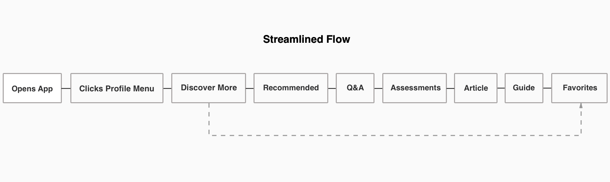
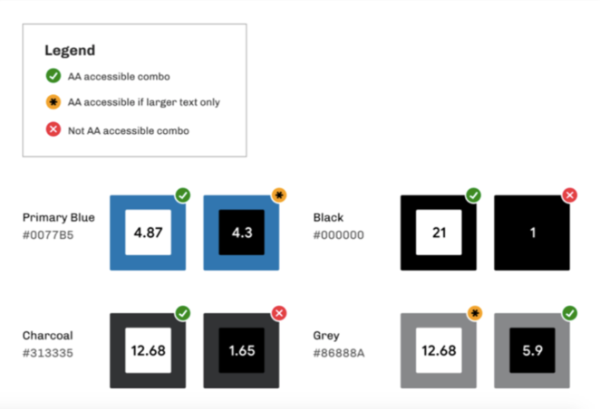

An app designed for creating new path for user to discover more information and resource to improve their professionalism.
Team
Solo Designer
Tools
Sketch, Whimsical, Figma
Tags
Interaction Design, User Research, Visual Design
Timeline
Passion Project (1 week)
INTRODUCTION
Project Overview
LinkedIn is a social network that focuses on professional networking and career development. It has more than 575 million users worldwide. We use this platform to connect with other professionals, share job opportunities, improve professional reputation by posting updates and interact with others, get the latest industry information, and more.
LinkedIn is one of the social apps I use the most every day. In the process of using it, I noticed that the "discover more" tab in the navigation bar on the left has not been fully utilized. When I opened "discover more", it showed the contents like “recommended people or pages for you" which are already covered in "my network" tab. Based on the repetition of content, I am thinking about how to enrich the content and features for the tab to improve the user experience of LinkedIn?
This submission is an overview of my design process and aims to create an experience that can be designed to help users improve their professionalism.
HOW IT BEGAN
Problem Overview
Currently, the "discover more" in the LinkedIn’s navigation bar on the left has not been fully utilized. When I open "discover more", the content displayed inside is the content already covered in "my network". The duplication of content leads to the lack and ambiguity of the function bar, and it might cause users to feel confused and boring in the process of using it.
Design Challenge
How might we design a LinkedIn experience where users can better improve their professionalism by discovering more information and resources?
Solution
My solution is to replace the current duplicated content in “discover more” with content that can help users improve their professionalism. At present, LinkedIn provides main functions such as connecting industry professionals, sharing job opportunities, and obtaining the latest industry information etc., but its function in helping users to improve their professionalism is still relatively weak, so I will focus on replacing the content in “Discover more” with the content targeted at this feature. The new content aims to relate to users’ interested industry from their followed hashtags to provide them with upgrading industry knowledge and skills, exchanging industry experience, testing professional ability, and gaining suggestions for career development to help users improve their professionalism.
Constrains
My Design Process
USER RESEARCH
User Interview
I conducted interviews with 10 active LinkedIn users who have over 500 connections to see if there were any underlying common experiences or pain points. Some of my findings included:
- 80% of users never or rarely use the feature of “Discover more”.
- They dislike to use this feature because the content inside is duplicated with another main feature, which is regarded as worthless and confusing.
- They hope this feature can provide users with richer content and resources which are supportive to their career development.
To get a better understanding of the target users, I created a persona that would exemplify the user type that I was targeting.
The persona helps give direction to what the intention and core needs of the design solution should be.

IDEATING THE SOLUTION
Determine the Features
I took the key insights from the interview process and synthesized it into a set of features/functions my target users are looking for to alleviate their pain points and address their needs.
PROCESS
User Flows
In order to visualize the journey that my target user would take, I created a single streamlined flow of actions as well as an integrated flow within LinkedIn’s core features.
The streamlined flow helps me figure out what sort of actions make sense for a user and what would be most intuitive in terms of actions.
The integrated flow helps me visualize where the streamlined flow could live within LinkedIn’s core functions.
Wireframing
Sketching the Interface
As the streamlined and integrated flow became more and more clear, I began sketching wireframes of the new solution. The purpose of the low fidelity sketches was mainly to ensure hierarchy, design goals, and make sure that I was using the proper components for each function.
Design Goals:
- Provide users channels to improve their professionalism.
- Contents should be linked to the hashtags followed by users.
- Make sure that designs feel native to LinkedIn’s current application.
Visual Design
One of the main constraints of this project was to make sure that I adhered to LinkedIn’s current brand guidelines. Luckily, I was able to use already existing design components to create my solution and therefore, did not have to include additional colors.
As an additional measure of accessibility and usability, I tested each color to determine its accessibility. Each color passed AA accessibility standards where needed.
Final Output
The final product now allows users to improve their professionalism by discovering more resources and information in upgrading industry knowledge and skills, exchanging industry experience, testing professional ability, and gaining suggestions for career development.
The recommendation column allows users to get high-quality post content about industry highlighted points. The article column provides technical analysis articles related to the industries that users follow in hashtags. The Q&A column allows users to exchange professional experience they are interested and conduct communication interactions. The test column allows users to test their industry knowledge and abilities by answering questions, and get the corresponding certificate after passing the test. The guide column provides the relevant data of user interested industry as reference for users who are looking for a job or changing careers.
In conclusion, my redesigned content for “Discover more” broadens the channels for users to obtain more information and resources, supports their career development, and helps them improve professionalism. Meanwhile, utilizing only current LinkedIn components and brand guidelines, my new solution is able to be integrate into LinkedIn’s mobile application seamlessly.
Reflection
This LinkedIn project was the first project where I challenged myself to integrate something that was already existing. What I learned was that when designing from an already existing design system, most of my time went into thinking about the potential solutions, user journeys, and what existing pain points could be alleviated.
Putting together the design was essentially putting building blocks together, the main challenge here was to make sure I was using the right component at there right time. Furthermore, one of the main constraints that I had to overcome was that I didn’t have access to any sort of LinkedIn statistics. There could be a reason why this solution may not work and if there is, I’d love to hear it. Additionally, I did not have access to LinkedIn’s design library, therefore I had to rebuild the entire UI from scratch which was a challenge in itself.
If I were to do it all over, I would definitely incorporate a developer that could understand the technical feasibility of the product. The new function that I created is the meaningful experience and I tried to make it as feasible as possible with my current knowledge. Being the single designer, I struggled with understanding what was possible and what wasn’t, incorporating an engineer or developer would have helped with validating the feasibility.
Thanks for Reading ❤️
If you’d like to hear more about this project or my other projects, feel free to send me an email–I’d love to chat ☕.
My Other Projects
If you'd like to see more, check out my other projects below!